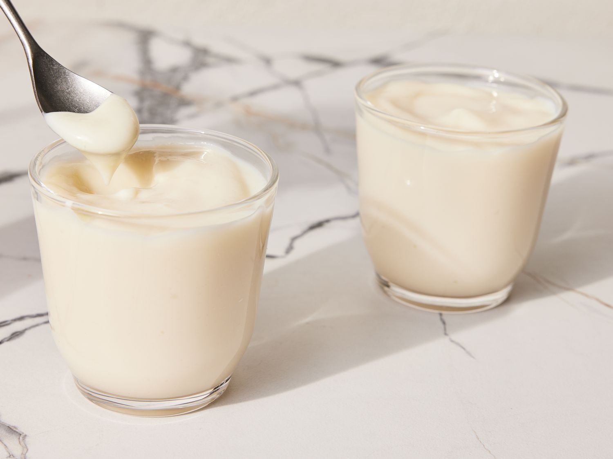

Vanilla Pudding

Description
A simple, rich, and delectable dessert.
Ingredients
2 cups of milk
1/2 cup of white sugar
3 tablespoons of cornstarch
1/4 teaspoon of salt
1 teaspoon of vanilla extract
1 tablespoon of butter
Steps
Step 1: Heat milk in a medium saucepan over medium heat until bubbles form at the edges.
Step 2: Mix sugar, cornstarch, and salt together in a small bowl.
Step 3: Add sugar, cornstarch, and salt mixture to hot milk, a little at a time, stirring until thick enough to coat the back of the spoon.
Step 4: Remove saucespan from heat, and stir in vanilla and butter.
Step 5: Spoon pudding evenly into 5 serving dishes. For best results, chill pudding in the refrigerator before serving.